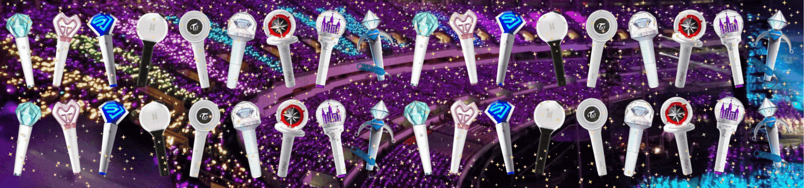

¡Quiero una entrada!
CONTEXTO
El K-pop ha trascendido su origen musical para convertirse en un fenómeno global que mueve multitudes y millones de dólares alrededor del mundo. Un elemento clave para entender su impacto económico son los precios de las entradas a conciertos, que reflejan tanto la demanda creciente como la expansión de esta industria en mercados diversos. Analizar cómo han evolucionado estos precios a lo largo del tiempo y en distintas regiones permite comprender no solo el valor económico del K-pop, sino también las decisiones y estrategias detrás de un negocio que hoy se posiciona como una fuerza cultural y financiera internacional.
Chao Corea, hola mundo económico: el K-pop ya no es solo música, es industria
Por años, Corea del Sur fue el epicentro indiscutido del K-pop. Pero hoy, los escenarios del mundo entero vibran al ritmo de esta industria musical que ya no solo vende música y discos, ahora venden industria
Desde la segunda generación del K-pop, la industria surcoreana entendió el potencial que tenía el negocio. Así comenzó una expansión que hoy posiciona al K-pop como una de las industrias culturales más rentables a nivel global, con mercados como Japón, Brasil o incluso Chile sumándose al fenómeno no solo como fans, sino como actores relevantes para las ganancias económicas que genera la industria.
“Quiero una entrada”: del furor fan al boom económico
Los precios suben, y las ganancias también. Pero no siempre fue así. Según nuestra investigación, en los primeros años de expansión de la segunda generación (cerca de 2010), el precio promedio de una entrada a un concierto de K-pop rondaba los 110 dólares. Incluso hubo una baja en los años siguientes, hasta que en 2013 se registró un quiebre: los precios comenzaron a escalar y no han vuelto a bajar de manera significativa.

La visualización lo deja claro: el año 2021 marcó un peak histórico, con un promedio de 255 dólares por entrada, coincidiendo con el contexto pandémico. Ese año, BTS —uno de los grupos más influyentes del planeta— realizó presentaciones con entradas que oscilaban entre 60 y 450 dólares, disparando el promedio. El K-pop se consolidaba como un negocio global.
¿Y si veo el concierto en otro país?
En un mercado tan dinámico y demandado, los precios varían enormemente según la región. Aunque Asia sigue siendo el corazón logístico de la industria, las visualizaciones muestran que el mayor rango de precios hoy se encuentra en Europa, 743 dólares con entradas que pueden alcanzar los
Por su parte, el mercado asiático muestra una relativa estabilidad. Japón y China siguen siendo puntos clave para la industria, con altos niveles de consumo y fidelidad de los fans. Sin embargo, Latinoamérica ha emergido como un jugador fuerte: países como Brasil y México destacan por su número de conciertos y por un considerable aumento en los precios, con valores que superan 400 dólares algunos casos.

Chile, aunque más pequeño en escala, forma parte de este nuevo mapa global del K-pop. La llegada constante de grupos coreanos y el crecimiento de la cultura Hallyu en el país demuestran este gran crecimiento cuturla y económico.
Esto recién empieza...
Aunque el K-pop lleva más de 25 años en escena, las visualizaciones evidencian una industria que sigue en expansión, que diversifica sus mercados y que transforma la música en un fenómeno económico global.Esta internacionalización ha consolidado al K-pop no solo como un fenómeno musical, sino también como una fuerza económica global que moviliza millones de dólares en giras, merchandising, colaboraciones de moda y campañas publicitarias, una expresión cultural que trasciende fronteras.
¿CUÁNTO CUESTA VER A UN GRUPO DE K-POP?
¿HAY RUMORES DE UN POSIBLE CONCIERTO EN CHILE DE TU GRUPO FAVORITO? EN CASO QUE NO TENGAN UNA PARADA ¿TU PLAN B ES VIAJAR A OTRO PAÍS? ¿VALE LA PENA CRUZAR FRONTERAS? AQUÍ ENCONTRARAS UN ANÁLISIS SOBRE LOS MERCADOS QUE MÁS COMBIENEN AL BOLSILLO.
MALETA Y CALCULADORA
Cuando se trata de asistir a un concierto de k-pop se requiere de logística, un buen presupuesto y un sinfín decisiones. en años donde los grupos se embarcan en world tours, los fanáticos de latinoamerica esperan con ansiedad ver a su país incluido en la lista. pero cuando esto no ocurre, ¿es realmente caro ver a tu grupo favorito en otro país?
A través de un análisis de precios de entradas a concierto de k-pop desde 2009 hasta 2025 revela que los precios varían entre mercados. Aquí va un desglose de los resultados
Precios en distintos mercados
El sudeste asiático (Tailandia, Singapur, filipinas, indonesia, malasia), japón y corea del sur destacan por ofrecer precios generalmente más bajos. Entre 2014 y 2019 se registraron precios mínimos entre 30 y 90 dólares.
Desde 2022 incluso en estos mercados “accesibles” el precio de la entrada más barata ha mostrado un incremento, y en años más recientes se alcanzaron los 250 dólares.
Estados Unidos no se queda atrás, con precios que han aumentado considerablemente aunque no es donde se han registrado los precios más altos.
Por otro lado, algunos países como Brasil, Estados Unidos y Europa tienen precios relativamente altos, especialmente en entradas vip y que permiten estar más cerca del escenario. Por ejemplo, en 2025, las entradas para el DominATE Tour en Brasil de Stray Kids alcanzó los 457 dólares.
Parte del aumento en EE.UU. se debe a la política de dynamic pricing (precio dinámico) que Ticketmaster introdujo en 2022. esta práctica eleva los precios en momentos de alta demanda, similar a lo que ocurre en hora punta con Uber. La empresa alega que esta práctica tiene por objetivo frenar a los revendedores. Sin embargo, algunas entradas han alcanzado los 565 dólares.
En Europa, esta situación no es muy distinta porque las entradas pueden partir desde los 43 dólares y llegar hasta los 743 dólares.


Importante: Durante el análisis visual de los precios de entradas, se identificó que ciertos valores extremadamente altos distorsionaban la escala cromática de los mapas de calor. En particular, estas celdas se representaban con un color rosa intenso, desplazando al resto de los datos hacia gamas más frías (lilas y morados) y dificultando la apreciación de variaciones más sutiles entre mercados y años.
Para mejorar la legibilidad y permitir una interpretación más fiel de las diferencias en los precios, se optó por eliminar visualmente las celdas correspondientes a los valores más altos (percentil 95 en adelante). Esta decisión metodológica fue adoptada con el fin de resaltar la distribución general de los precios sin que casos extremos la enmascaren. Los valores excluidos fueron reportados por separado y se encuentran señalados en la zona inferior de la visualización para preservar la integridad informativa del análisis.
Precios K-pop: evolución por grupo y año
Grupos como Stray Kids, SHINee y Super Junior han ofrecido entradas más accesibles en ciertos años, con precios base entre los 25 y 60 dólares. En especial, entre 2018 y 2020, la mayoría de los grupos registraban entradas más baratas por debajo de los 50 dólares.
Sin embargo, desde 2022 se observa un aumento sostenido incluso en las entradas más económicas. En 2025, por ejemplo, grupos como SHINee y SEVENTEEN ya superan los 80 dólares en su ticket más barato.
cuanto a las entradas más caras, BTS y TWICE destacan como los grupos con los valores más elevados. BTS alcanzó un peak de 450 dólares en 2021, mientras que TWICE llegó hasta los 479 dólares en 2023. Estos precios suelen estar asociados a beneficios extra como cercanía al escenario, accesos anticipados o experiencias VIP.
El caso de ARTMS es llamativo: en 2024 ofrecieron una entrada que llegó a los 400 dólares, pero al año siguiente bajaron considerablemente sus precios, lo que podría estar vinculado a ajustes en la demanda o cambios en su gira.
En general, los datos muestran una tendencia clara al alza en el costo de asistir a conciertos de K-pop, tanto para fans que buscan experiencias premium como para quienes optan por la entrada más barata.

¿CUÁNTO CUESTA VER A UN GRUPO DE K-POP?
¿HAY RUMORES DE UN POSIBLE CONCIERTO EN CHILE DE TU GRUPO FAVORITO? EN CASO QUE NO TENGAN UNA PARADA ¿TU PLAN B ES VIAJAR A OTRO PAÍS? ¿VALE LA PENA CRUZAR FRONTERAS? AQUÍ ENCONTRARAS UN ANÁLISIS SOBRE LOS MERCADOS QUE MÁS COMBIENEN AL BOLSILLO.
MALETA Y CALCULADORA
Cuando se trata de asistir a un concierto de k-pop se requiere de logística, un buen presupuesto y un sinfín decisiones. en años donde los grupos se embarcan en world tours, los fanáticos de latinoamerica esperan con ansiedad ver a su país incluido en la lista. pero cuando esto no ocurre, ¿es realmente caro ver a tu grupo favorito en otro país?
A través de un análisis de precios de entradas a concierto de k-pop desde 2009 hasta 2025 revela que los precios varían entre mercados. Aquí va un desglose de los resultados
Precios en distintos mercados
El sudeste asiático (Tailandia, Singapur, filipinas, indonesia, malasia), japón y corea del sur destacan por ofrecer precios generalmente más bajos. Entre 2014 y 2019 se registraron precios mínimos entre 30 y 90 dólares.
Desde 2022 incluso en estos mercados “accesibles” el precio de la entrada más barata ha mostrado un incremento, y en años más recientes se alcanzaron los 250 dólares.
Estados Unidos no se queda atrás, con precios que han aumentado considerablemente aunque no es donde se han registrado los precios más altos.
Por otro lado, algunos países como Brasil, Estados Unidos y Europa tienen precios relativamente altos, especialmente en entradas vip y que permiten estar más cerca del escenario. Por ejemplo, en 2025, las entradas para el DominATE Tour en Brasil de Stray Kids alcanzó los 457 dólares.
Parte del aumento en EE.UU. se debe a la política de dynamic pricing (precio dinámico) que Ticketmaster introdujo en 2022. esta práctica eleva los precios en momentos de alta demanda, similar a lo que ocurre en hora punta con Uber. La empresa alega que esta práctica tiene por objetivo frenar a los revendedores. Sin embargo, algunas entradas han alcanzado los 565 dólares.
En Europa, esta situación no es muy distinta porque las entradas pueden partir desde los 43 dólares y llegar hasta los 743 dólares.
Importante: Durante el análisis visual de los precios de entradas, se identificó que ciertos valores extremadamente altos distorsionaban la escala cromática de los mapas de calor. En particular, estas celdas se representaban con un color rosa intenso, desplazando al resto de los datos hacia gamas más frías (lilas y morados) y dificultando la apreciación de variaciones más sutiles entre mercados y años.
Para mejorar la legibilidad y permitir una interpretación más fiel de las diferencias en los precios, se optó por eliminar visualmente las celdas correspondientes a los valores más altos (percentil 95 en adelante). Esta decisión metodológica fue adoptada con el fin de resaltar la distribución general de los precios sin que casos extremos la enmascaren. Los valores excluidos fueron reportados por separado y se encuentran señalados en la zona inferior de la visualización para preservar la integridad informativa del análisis.